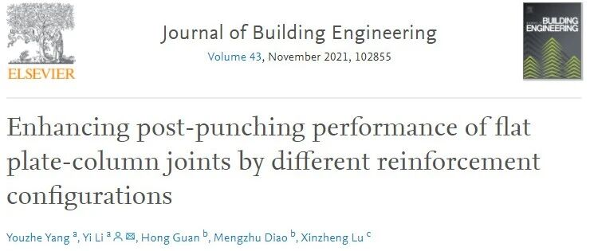

新论文：不同钢筋构造对RC板柱节点冲剪破坏后性能的加强作用
以下文章来源于北工大结构抗倒塌课题组 ，作者杨友喆等

建筑结构抗倒塌课题组，主要从事工程结构和材料在地震、冲击、火灾等灾害荷载下的抗倒塌和防护性能研究工作。

论文链接：
https://authors.elsevier.com/a/1dGJl8MyS8%7EuaQ
#1 研究背景
近年来，节点冲剪破坏导致的板柱结构连续倒塌事故不断发生，造成了严重的生命和财产损失。由于冲剪破坏是小变形下的脆性破坏，抗剪强度主要取决于楼板厚度和抗剪构造措施。若提高楼板厚度,会显著提升结构自重,不利于抗连续倒塌，而通过简单改变其他结构参数来提升节点受力性能效率较低，因此现有研究通过加强构造措施提升节点抗冲剪和结构抗倒塌的能力，包括布置抗剪的栓钉、钢筋和箍筋，设置暗梁或采用预应力技术。目前上述加强措施的研究大多还采用传统冲剪破坏的研究思路，主要关注节点小变形下的冲剪破坏并且未考虑周边楼板的约束作用。然而连续倒塌研究还需要关注大变形下节点的冲剪破坏后受力性能，特别在实际周边楼板的面内约束下，节点能够发挥显著的悬挂机制，这对结构抵抗破坏传播的能力具有重要影响，但相关研究还非常有限。
前期我们对考虑面内约束作用的常规节点开展了冲剪破坏全过程的试验和数值模拟工作，发现穿柱钢筋对节点冲剪后的承载和变形能力起控制作用。在此基础上我们进一步在节点区域布置箍筋和环梁构造对穿柱钢筋进行约束，使之在冲剪破坏后变形协调一致、受力均匀，高效率发挥穿柱钢筋对冲剪破坏后承载力的贡献。同时有效约束周边未穿柱钢筋，使之参与受力，强化节点区域向周边楼板的荷载传递能力，最终提高结构抗倒塌承载力和变形能力。
在本研究中，首先采用试验分析了两种加强措施的节点在向上和向下冲剪情况下的破坏全过程，然后建立了精细有限元模型分析了节点受力机理，最后开展了参数研究对上述措施进行了优化，为节点抗连续倒塌设计提供参考。

#2 试件设计
为了研究节点加强措施对RC板柱结构抗倒塌性能的影响，本文在标准试件（UPS/DPS）的基础上开展了冲剪区配箍筋（UPS-S/DPS-S），暗环梁（UPS-R/DPS-R）的试验和数值模拟研究。结构原型为柱距6000 mm的4×4跨平板结构车库，试件取底层中柱节点，如图1所示。当中柱在意外灾害作用下发生初始破坏后，相邻两跨楼板变为一跨楼板。试件楼板边缘和大尺寸边界梁整体现浇，以模拟周边楼板的约束作用。试件构造如图2所示。

图1 原型结构示意图

图 2 加强试件构造（单位: mm）
#3 试验结果
试件UPS-S/DPS-S的力-位移曲线如图3所示。冲剪破坏阶段，箍筋约束混凝土使更大范围的混凝土参与受剪，同时箍筋也能直接分担剪力，因此提高了板的冲剪强度和变形能力。除此之外，箍筋约束使更多的板内纵筋参与受力，结构阻止承载力下降的能力增强，故冲剪破坏发生后UPS-S/DPS-S的残余承载力（Ft）与UPS/DPS相比分别提高123%和177%。在冲剪破坏发生后，由于箍筋的约束作用冲剪椎内的混凝土还保持整体性，使得周边大范围的非穿柱钢筋参与受力，因此与标准件相比S试件穿柱与非穿柱钢筋的应变发展趋势较为一致（见论文应变分析）。在箍筋约束下非穿柱钢筋可以分担穿柱钢筋的力、延缓穿柱钢筋的断裂，增强节点冲剪后承载力。

图3 箍筋加强试件的承载力-位移曲线
暗环梁试件的力-位移曲线如图4所示。由于环梁区域的钢筋和混凝土的协同工作能力加强，冲剪破坏面从原有位置变换到环梁内外边缘两处，因此发生了两次冲剪破坏，这说明环梁内径需要小心设计，避免内部冲剪强度低于外部冲剪，即内部存在冲剪薄弱面。

图4 环梁加强试件的承载力-位移曲线
作用在UPS-R/DPS-R的外荷载通过穿柱钢筋传递到环梁，由于环梁纵筋和箍筋约束了周边的非穿柱钢筋，更多的非穿柱钢筋参与受力，因此与UPS/DPS相比，UPS-R和DPS-R的冲剪后承载力分别提高53%和47%。
抗力曲线下包络的面积是结构抵抗竖向倒塌破坏的耗能能力，通过连接曲线上的关键点近似计算结构耗能能力，UPS-S/DPS-S和UPS-R/DPS-R的平均耗能能力比UPS/DPS分别提高99%和102%，这两种措施均可有效提高结构的抗连续倒塌能力。
#4 有限元模拟
基于LS-DYNA有限元软件，对试验试件进行数值验证（图5），曲线关键点以及破坏形态与试件结果吻合良好（如图6，7所示）。

图5 精细数值模型

图6 承载力-位移曲线对比

图7 破坏模式对比
考虑试验所能分析的试件数量相对有限，本研究采用数值模型进一步分析两种加强措施对节点受力性能的影响规律。在UPS-S/DPS-S的基础上，通过改变箍筋的数量和布置方式进而改变箍筋所约束的纵筋数量和混凝土范围，箍筋布置如图8所示。关键点位移承载力变化百分比见表1。

图8 UPS-SI (I=1 to 5)箍筋布置图（单位：mm）
表1 关键点位移承载力变化百分比

总体来看随着箍筋数量的增加，结构承载力提高变形能力降低。虽然双支箍 S5 由于箍筋数量最多且能够有效约束板内纵筋，冲剪和冲剪后强度提升幅度均最显著，但由于箍筋数量过多，结构脆性增强，变形能力大幅下降。与同为双支箍的 S4 相比，S5冲剪及冲剪后强度虽分别提高6%和3%，但节点变形能力却分别降低了15%和13%。说明复合箍筋虽然能够有效提高结构承载力，但当箍筋数量过多时，承载力提高幅度很有限，且会导致结构脆性增加，破坏提前发生。除此之外，对比 S 和 S4 试件最终的破坏状态（图 9）可以看出，增加箍筋长度和双支箍结合使用可以缓解节点破坏程度，将损伤范围控制在布置箍筋的节点区域，避免破坏的扩散和整个板的倒塌。综合结构的承载力和变形两个指标以及经济性来看，采用类似 S4 的双支箍布置方式可以高效提高结构的受力性能。

图9 DPS-S和DPS-S4混凝土破坏模式
在试验试件UPS-R/DPS-R的基础上，将内环梁和柱连接，使柱和环梁区域整体受力，设计试件UPS-R1/DPS-R1。在UPS-R1/DPS-R1的基础上，增加环梁纵筋，得到UPS-R2/DPS-R2，试件配筋图如图10所示。


图10 UPS/DPS-R1和R2箍筋布置图（单位：mm）
采用数值方法对上述4个试件进行分析，结果如图11所示。DPS-R1/R2的冲剪强度均有小幅提升，在冲剪破坏后结构的变形能力和承载力提升幅度较大，均在10%以上。且在首次冲剪破坏后DPS-R1/R2承载力稳步上升，未发生DPS-R的二次冲剪破坏。说明通过取消内环梁区域的混凝土和增强环梁约束刚度，可以有效阻止冲剪破坏的提前发生。

图11 承载力-位移曲线对比
#5 结论
(1) 冲剪破坏阶段，UPS-R/DPS-R发生两次冲剪破坏，因此其变形和承载力提高程度均没有UPS-S/DPS-S显著。冲剪破坏后，与UPS/DPS相比，UPS-S/DPS-S和UPS-R/DPS-R的变形分别平均提高25%和32%，承载力分别平均提高64%和50%。因此，这两种加强措施均能显著提升节点在大变形阶段的变形和抵抗外荷载的能力。
(2) 精细有限元模型可以准确模拟冲剪和冲剪后关键点的位移和承载力，误差小于10%。模拟结果能够实现冲剪破坏后混凝土大面积剥落、钢筋大变形下转角的状态，核心区混凝土剪切破坏，与试验的破坏形态完全一致。
(3) 对箍筋加强节点，冲剪破坏后通过箍筋所约束的板内纵筋受拉来承载，但当箍筋数量过多时，承载力提高幅度有限，且会导致结构脆性显著增加，破坏提前发生。采用合理的双支箍布置方式不仅可以缓解节点最终破坏程度，还可以有效提高节点冲剪和冲剪后强度。
(4) 对暗环梁加强节点，将内环梁与柱相连可以有效阻止冲剪破坏的提前发生。
作者简介

杨友喆
2017年本科毕业于西安建筑科技大学，2020年硕士毕业于北京工业大学，获澳洲皇家墨尔本理工大学RMIT博士生全奖，将于2021年秋季入学。主要从事钢筋混凝土结构连续倒塌方面的研究，已在Journal of Building Engineering，ASCE Structures Congress，《工程力学》和《建筑结构》等国内外学术期刊和会议上发表论文4篇，在审SCI论文1篇。
---End---
相关研究
专著
人工智能与机器学习
城市灾害模拟与韧性城市
高性能结构与防倒塌
新论文：抗震&防连续倒塌：一种新型构造措施
长按识别二维码，关注我们的科研动态